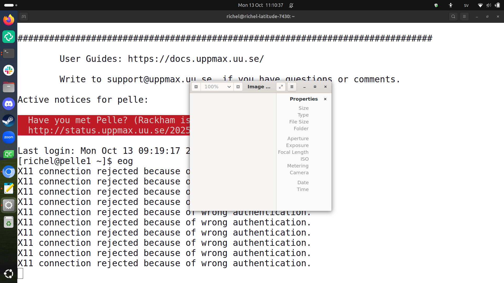

Use the console environment¶
Learning outcomes
- Practice using the UPPMAX documentation
- Understand what the prompt is
- Can navigate the file system
- Can do basic file management: create, copy, move and delete a file and folder
- Can copy-paste text between local computer and the terminal (in both directions)
- Can use tab-completion with the prompt
For teachers
Teaching goals are:
- Learners practice using the UPPMAX documentation
- Learners understand what the prompt is
- Learners have navigated the file system
- Learners have done basic file management: create, copy, move and delete a file and folder
- Learners have copy-pasted text between local computer and the terminal (in both directions)
- Learners have used tab-completion with the prompt
Lesson plan:
gantt
title Using the terminal
dateFormat X
axisFormat %s
section First hour
Prior : prior, 0, 5s
Present: present, after prior, 2s
%% It took me 16 mins, here I do that time x2
Challenge: crit, challenge, after present, 32s
%% Here I use the same time it took me to give feedback
Feedback: feedback, after challenge, 16sPrior questions:
- Do you expect it to be hard to use a console environment?
- Do you expect there to be much different behavior when using a console environment?
- Does someone have already tried to copy-past text between local computer and a terminal?
Feedback questions:
- How do you paste to a terminal?
- How does tab completion work?
Why?¶
Every UPPMAX user need to use the terminal at some point. Let's make sure we use it well :-)
Here we do the same exercises as when using the remote desktop environment.
The goal is to make sure you can indeed do all these 'simple' things, as maybe you'll be too afraid to ask a colleague later.
Learning Linux¶
Using a terminal and getting comfortable with Linux may not be the most intuitive. Luckily, Linux is heavily used and there are many fora, websites and books written about it.
One such book is The Linux Command Line, which is available in both print and online:
Book cover of 'The Linux Command Line'
Exercises¶
Need a video?
See this YouTube video that shows the solution of these exercises
Pelle works the same a Rackham in these contexts.
It is assumed you are logged in to the console environment of Pelle with a terminal. In case you did not get this to work, login via the remote desktop website and start a terminal there.
You are encouraged to search the internet for the answer yourself. Or, if you prefer, use the links to the relevant chapters in the book 'The Linux Command Line'. Or any other way!
Try to do these exercises by trying out things yourself first. There are usually multiple ways to solve the exercise. Feel encouraged to explore this new environment too!
Exercise 1: the prompt¶
You are in a terminal on a Pelle login node. You see this:
What does that all mean: the [, sven, @, pelle2, ~, ] and $?
Tips
- Tip 1: search for 'terminal prompt'
- Tip 2: search the UPPMAX documentation for 'terminal'
Answer
[and]: indicates the beginning and end of informationsven: the username@: at which clusterpelle2: the remote node's name, in this case Pelle's second login node~: the user in the home folder$: indicate to be ready for user input
Exercise 2: copy-paste text¶
- Copy text from your local computer to your terminal
Tips
- Tip 1: search for 'how to paste into terminal'
- Tip 2: search the UPPMAX documentation for 'terminal'
Answer
Copying from your local computer uses a regular CTRL + C.
How to paste depends on the terminal you use.
The most common keyboard shortcut is CTRL + SHIFT + V for pasting
into a terminal
- Copy text from your terminal to your local computer
Answer
How to copy depends on the terminal you use.
The most common keyboard shortcut is CTRL + SHIFT + C for copying
from a terminal
Pasting to your local computer uses a regular CTRL + V.
Exercise 3: file navigation¶
- You are in a terminal on a Pelle login node. Find out the directory you are in: which command do you use?
Tips
- Tip 1: search for 'Linux present working directory command'
- Tip 2: scan the the 'Navigation' chapter in 'The Linux Command Line'
Answer
The command to use is pwd, short for 'Present working directory':
You output will look similar to this:
Exercise 4: file management¶
You are in a terminal on a Pelle login node, in your home folder.
From there:
- Find out which files are in your home folder from the terminal. This is exactly the same as displayed in the file explorer in the remote desktop
Tips
- Tip 1: search for 'Linux display files in current folder'
- Tip 2: scan the the 'Looking around' chapter in 'The Linux Command Line'
Answer
The command to use is ls, short for 'List':
You output will look similar to this:
- create a file called
test.txt
Tips
- Tip 1: search for 'Linux create file'
- Tip 2: this command is not mentioned in the book 'The Linux Command Line'
Answer
The command to use is touch:
You output will look similar to this:
- Find out which files are in your home folder from the terminal again, to confirm test.txt is indeed created
Answer
The command to use is ls:
You output will look similar to this:
- copy the file
test.txttocopy.txtand confirm that it worked
Tips
- Tip 1: search for 'Linux copy file'
- Tip 2: scan the the 'Manipulating files' chapter in 'The Linux Command Line'
Answer
The command to use is cp:
You output will look similar to this:
- delete the file
copy.txtand confirm that it worked
Tips
- Tip 1: search for 'Linux delete file'
- Tip 2: scan the the 'Manipulating files' chapter in 'The Linux Command Line'
Answer
The command to use is rm:
You output will look similar to this:
- rename the file
test.txttotest2.txtand confirm that it worked. Use tab-completion on the first filename
Tips
- Tip 1: search for 'Linux rename file'
- Tip 2: scan the the 'Manipulating files' chapter in 'The Linux Command Line'
Answer
The command to use is mv, short for 'Move'.
The full command looks like this:
with tab-completion, one can type ...
... and then press TAB to autocomplete the first filename.
You output will look similar to this:
- create a folder
my_folderand confirm that it worked
Tips
- Tip 1: search for 'Linux create folder'
- Tip 2: scan the the 'Manipulating files' chapter in 'The Linux Command Line'
Answer
The command to use is mkdir, short for 'Make directory'
You output will look similar to this:
- copy the
my_folderfolder tomy_copyand confirm that it worked
Tips
- Tip 1: search for 'Linux copy folder recursively'
- Tip 2: scan the the 'Manipulating files' chapter in 'The Linux Command Line'
What does cp: omitting directory ‘my_folder’ mean?
This happens if you copy non-recursively, i.e. if you forget the -R flag.
You'll see:
When trying to copy a folder without -R, this warning
is given and no folder is copied.
Answer
The command to use is cp with the -R flag, where -R
denotes 'recursively':
You output will look similar to this:
[richel@pelle2 ~]$ cp -R my_folder my_copy
[richel@pelle2 ~]$ ls
bin GitHubs glob lib my_copy my_folder private R test2.txt users
[richel@pelle2 ~]$
If you forget the -R flag, you'll see:
When trying to copy a folder without -R, this warning
is given and no folder is copied.
- delete the
my_copyfolder and confirm that it worked
Tips
- Tip 1: search for 'Linux delete folder'
- Tip 2: scan the the 'Manipulating files' chapter in 'The Linux Command Line'
Answer
The command to use is rm with the -R flag, where -R
denotes 'recursively':
You output will look similar to this:
[richel@pelle2 ~]$ rm -R my_copy/
[richel@pelle2 ~]$ ls
bin GitHubs glob lib my_folder private R test2.txt users
If you forget the -R flag, you'll see:
When trying to rename a folder without -R, this warning
is given and no folder is renamed.
- rename the
my_folderfolder tomy_best_folderand confirm that it worked
Tips
- Tip 1: search for 'Linux rename folder'
- Tip 2: scan the the 'Manipulating files' chapter in 'The Linux Command Line'
Answer
The command to use is mv:
You output will look similar to this:
[richel@pelle2 ~]$ mv my_folder my_best_folder
[richel@pelle2 ~]$ ls
bin GitHubs glob lib my_best_folder private R test2.txt users
If you add the -R flag, you'll see:
[richel@pelle2 ~]$ mv -R my_folder my_best_folder
mv: invalid option -- 'R'
Try 'mv --help' for more information.
When trying to move a folder with -R, this warning
is given and no folder is renamed.
Exercise 5: starting eog¶
- From the terminal, start the program
eogby typingeogand press enter,
Answer
These eog menu will show up

- Close
eog
Answer
Click at the cross in the top-right corner of the eog window
Exercise 6: starting a text editor¶
- Create a file called
my_file.txt, if not already present
- Edit the file by opening it with the
nanotext editor
To be able to search the web for questions on this graphical text editor, its name will be useful to know:
- What is the name of this text editor?
Answer
This text editor is called 'nano'.
-
Save the file. There are multiple ways!
-
Close nano. There are multiple ways!
Answer
These are some of the more conventional ways to close nano:
- Press
CTRL + Xto close.nanoasks if you want to save the buffer (in this case: the file). PressY.nanoasks for a filename and shows the current filename. Press enter.